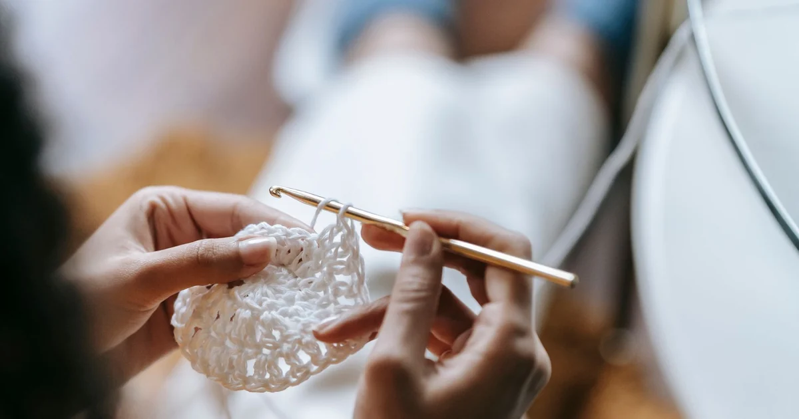
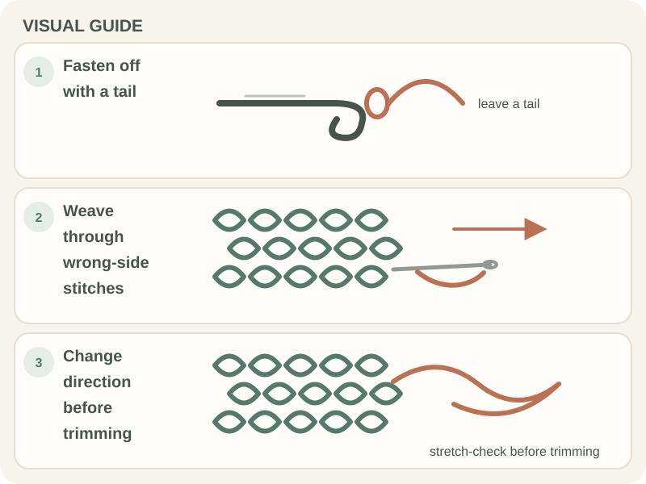

Patterns & Troubleshooting · Beginner guide
How to Finish a Crochet Project Neatly
Finish crochet by securing the last loop, weaving in tails, and checking seams and edges against the pattern.

Finishing is more than cutting yarn. A secure tail, careful assembly, and final check help the item hold its intended shape; the method depends on fiber and use.
Before you begin
Keep a yarn needle, scissors, and assembly notes nearby. Check care instructions before washing or blocking.
Step-by-step instructions
- Complete the final stitch and fasten off as directed, leaving enough tail for the finish.
- Weave the tail through the backs of several stitches, changing direction without tightening the fabric.
- Assemble pieces at the stated points and compare both sides before securing the seam. Mark edges to align if needed.
- Inspect for loose ends, missed joins, and uneven edges before trimming tails close.

What to check
A final pass prevents avoidable snags
The seam should lie flat and retain stretch. A hard knot or tight tail makes a bump. Use a pattern-specific finish when one is given.
Frequently asked questions
Can I cut the tail after fastening off?
Leave enough length for finishing. Trim only after weaving it in and checking that it is secure.
Should I wash a project before gifting?
Follow the yarn care label and recipient’s needs. Washing is not required for every project and may affect some fibers.
How long should I leave a yarn tail?
Leave enough tail to weave securely through several stitches, with extra length for bulky yarn or a seam. The exact amount depends on the yarn and finish.
Secure the last loop and plan the tail
Follow the pattern’s fastening-off instructions and leave a workable yarn tail. Pulling the tail through the active loop secures many simple finishes, but a pattern may use a different method. If the project will be seamed, keep enough yarn for the seam instead of trimming it early.
Thread a yarn needle and weave the tail through the backs or paths of several stitches, following the fabric’s structure. Change direction where practical so the end is less likely to work loose. Avoid tightening until the fabric puckers or becomes stiff. The tail should sit securely while the fabric keeps its natural stretch.
Assemble pieces in the order the pattern gives
Lay all pieces flat before joining and check their orientation. Match edges, corners, and shaping points with the pattern or schematic. Removable markers can hold matching points together while you sew. If the front and back look different, confirm which side the instructions identify as the right side before closing a seam.
Use the joining method specified by the pattern when one is given. A seam that is too tight can draw the fabric inward; one that is too loose can leave gaps. Check the seam after a few stitches and adjust before continuing across the full edge.
Inspect before trimming or gifting
Look at both sides for loose ends, skipped joins, uneven edges, and any fasteners that need securing. Try the item in the way it will be used, if appropriate, and make sure seams remain comfortable and flexible. Trim tails only after they are woven in and tested with a gentle tug. Do not cut into the fabric.
Check the yarn care label before washing or blocking. A gift does not always need washing, and care methods that suit one yarn may not suit another. Include the pattern’s or yarn maker’s care guidance when available.
Finishing mistakes to avoid
- Cutting tails before weaving: there may not be enough length to secure them. Finish and test each tail first.
- Pulling a seam too tight: the joined edge can pucker. Check the fabric after every few stitches.
- Assembling before checking orientation: pieces can be joined inside out or in the wrong order. Lay them out and match landmarks first.
A final project checklist
- Compare seams, edges, and dimensions with the pattern before trimming.
- Hide each tail without flattening or stiffening the fabric.
- Keep care instructions with the finished item, especially for gifts.
For a small project, the finishing check can be quick; for a multi-piece item, inspect each join before hiding the final tail. Compare the outline with the pattern, check that corners and straps sit in the intended direction, and gently flex the fabric to see whether the seam moves with it. These simple checks make it easier to catch a loose end before the item is used.